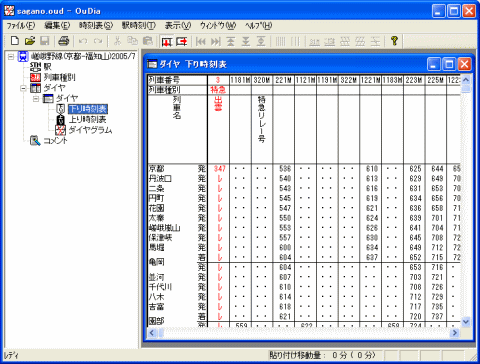

ファイルの読み込みに成功すると、『路線ビュー』の一番上のアイコンのテキストが『路線』から、路線ファイルにつけられた路線名（ "sagano.oud" では、『嵯峨野線(京都-福知山)2005/7』）に変わります。
また、路線名の下に、[駅]・[列車種別]・[ダイヤ]の３つのアイコンが現れます。
[ダイヤ]の下には、[下り時刻表]・[上り時刻表]・[ダイヤグラム] の３つのアイコンが現れます。
１． [下り時刻表]のアイコンをクリックしてください。
・・・『作業領域』に、下り列車の時刻表を表示したウインドウが現れます（以後、このウインドウのことを、『時刻表ビュー』と表記します）。

（図：時刻表ビュー）
カーソルキーやスクロールバーを操作することにより、初電から終電まで・起点から終点までの時刻を閲覧することができます。
『時刻表ビュー』の大きさを変えることもできます。
下り列車と同様に、[上り時刻表]のアイコンをクリックすることにより、上り列車の時刻表を表示させることができます。